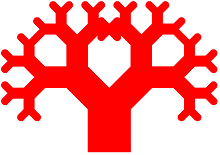

L'arbre de Pythagore est une fractale plane construite à l'aide de rectangle ou de carré. Elle porte le nom de Pythagore car chaque triplet de carrés en contact enclot un triangle rectangle, c’est une configuration traditionnellement utilisée pour illustrer le théorème de Pythagore.
La construction de l'arbre de Pythagore débute avec un simple carré. Sur ce carré sont construits plusieurs autres branches, chacun plus petit d'un facteur r, tels que les coins des carrés soient en contact. La procédure est appliquée récursivement à chaque carré, jusqu'à l’infini.
Passage du niveau 0 au niveau 3
La construction de l'arbre de Pythagore débute avec un simple rectangle. Sur ce rectangle sont construits plusieurs autres branches, chacun plus petit d'un facteur r, tels que les coins des carrés soient en contact. La procédure est appliquée récursivement à chaque rectangle, jusqu'à l’infini.
Passage du niveau 0 au niveau 3
L'interface graphique est décomposée en 5 éléments distinctes
Le Menu est subdivisé en 4 parties :
Ce Menu permet :
Menu Fichier.
Ce Menu permet de partir d'arbres de base
Menu Exemples.
Ce Menu permet :
Menu ?(A propos).
Cette interface permet de définir le nombre de branche de l'arbre et la pondération de chaque branches (en %) .
Interface Tree.
Cette interface permet de définir :
Interface Tree.
Cette interface permet de définir le ratio entre 2 génération de branche.
Interface Ratio
| Ratio décoché | Ratio coché avec 100 % | Ratio coché avec 50 % |
|---|---|---|
|  |
Tableau des Ratio.
Cette interface permet de définir :
Interface du Graphisme.
| Avec bout rond | Sans bout rond | |
|---|---|---|
| Couleur Automatique | |
|
| Couleur Unie |
Tableau des Graphismes.
Cette interface permet visualiser la fractale en utilisant les boutons "Zoom +" et "Zoom -".
Interface de Visualisation.
Cette interface permet de voir l'avancement des calculs.
Barre de progression.